褒めて伸ばす？！つもりはなくても・・・ [梅吉]
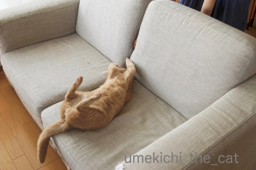
ソファの背もたれの間から指をわしゃわしゃするととても喜ぶ。
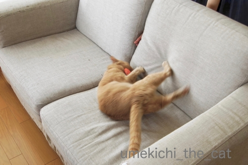
そこにまたたびキャンディを投入すると大興奮でクッションに蹴りの一撃！！
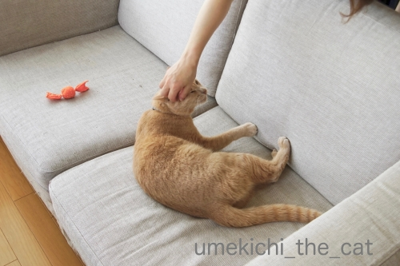
「その蹴りがすごいですねー！頑張りましたねー！！」
と褒められる梅吉さんw
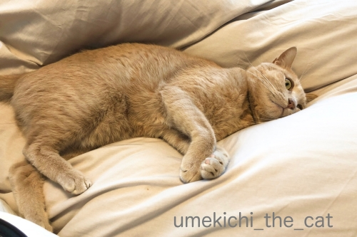
休日に朝寝をしているだけで
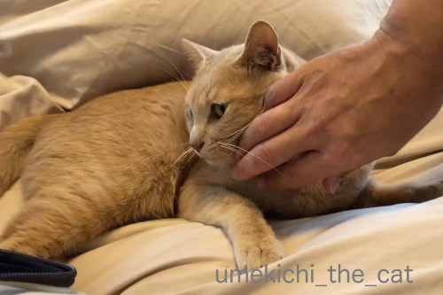
「そこにいましたかー！エライですねー！！」とまたもや褒められる。
このほか「おしっこ出ましたね♡ジャーって音が美しいですよ＾＾」
「りっぱなうんPですねぇぇぇぇ健康、健康！」
と事あるごとに褒めてしまいます。
別に褒めて伸ばそうとか思ってるわけじゃないのに自然に口から出ちゃうw
ニンゲンからポジティブな言葉を引き出す猫ってすごいですよねー！
エライですよね！！偉大ですよねー！！！（また褒めてるw）
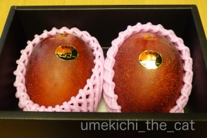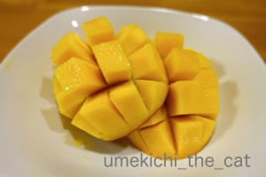
年に一度のお楽しみ宮崎県産マンゴー(๑˃̵ᴗ˂̵)و
果肉がめっちゃ柔らかでした＾＾
 ↑ガブッと一押し↑
↑ガブッと一押し↑
週末は大阪市内の城北公園に花菖蒲を見に行ってきました。
よく手入れされた庭園にたくさんの花菖蒲が咲いてます。
ちょうど見頃でしたー！
以下画像の羅列です。
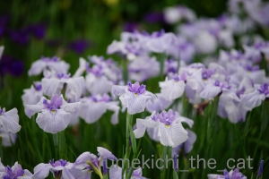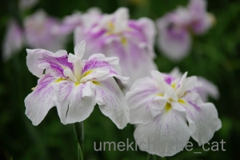
とにかく種類が多いです。
花がモリモリ咲いているので銘板が見えなかったり。
家に帰ってから園内の種別マップと
記憶の場所を照らし合わせても「？？？」だったので
花名は無しですw
ごめんなさいね(⌒-⌒;
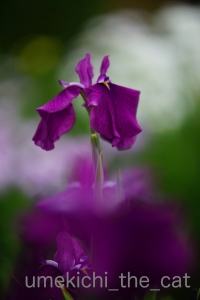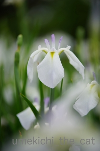
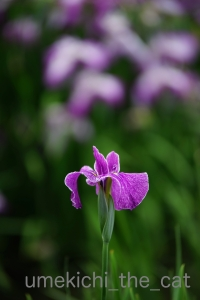
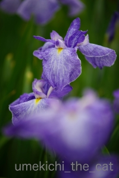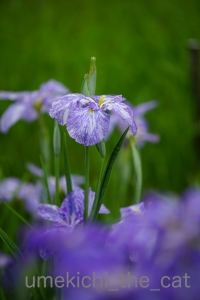
最後の二枚の写真の花菖蒲は同じ品種かな。
水彩絵の具で色付けしたような花びらにじっと見入っちゃいました。
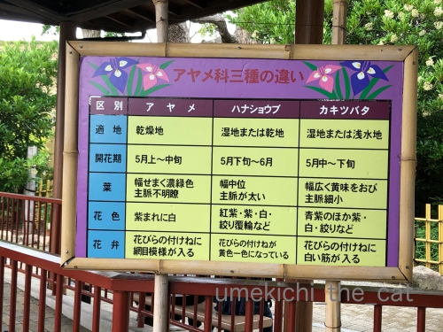
アヤメ科３種の見分け方。
看板見た時は覚えたような気になるんですが
いざお花を目の前にすると「え〜っと(◎_◎)？」ってなっちゃいます。
アヤメは花びらの付け根に網目模様って言われてますが
花菖蒲もそんな模様のを見かけるんですよ (-_-メ)
花菖蒲は乾地って覚えた時期もあったのですがここは湿地だし・・・
ま、それはそれとして純粋に楽しめば良いのですよねー！
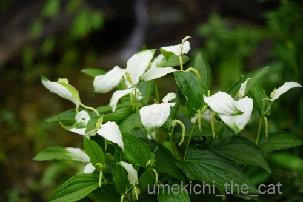
半夏生も咲いてましたよ。
ソファの背もたれの間から指をわしゃわしゃするととても喜ぶ。
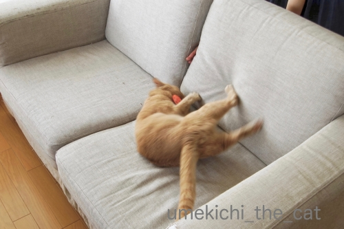
そこにまたたびキャンディを投入すると大興奮でクッションに蹴りの一撃！！
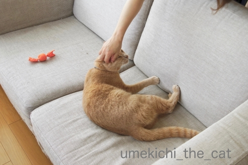
「その蹴りがすごいですねー！頑張りましたねー！！」
と褒められる梅吉さんw
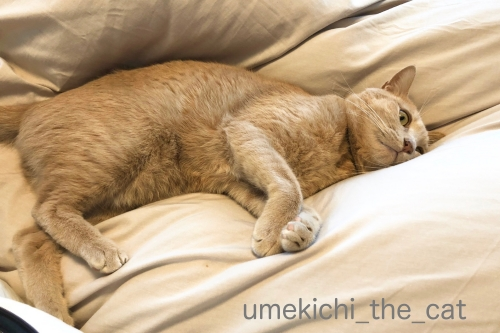
休日に朝寝をしているだけで
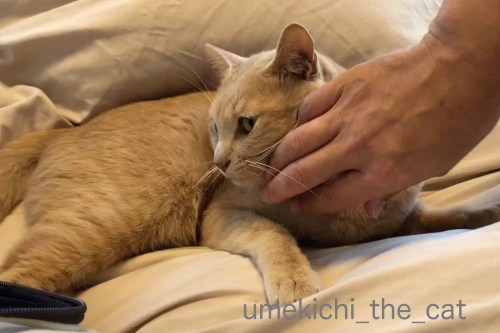
「そこにいましたかー！エライですねー！！」とまたもや褒められる。
このほか「おしっこ出ましたね♡ジャーって音が美しいですよ＾＾」
「りっぱなうんPですねぇぇぇぇ健康、健康！」
と事あるごとに褒めてしまいます。
別に褒めて伸ばそうとか思ってるわけじゃないのに自然に口から出ちゃうw
ニンゲンからポジティブな言葉を引き出す猫ってすごいですよねー！
エライですよね！！偉大ですよねー！！！（また褒めてるw）
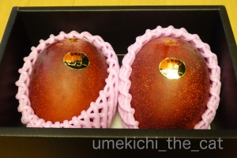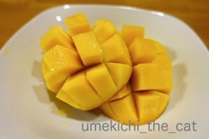
年に一度のお楽しみ宮崎県産マンゴー(๑˃̵ᴗ˂̵)و
果肉がめっちゃ柔らかでした＾＾
週末は大阪市内の城北公園に花菖蒲を見に行ってきました。
よく手入れされた庭園にたくさんの花菖蒲が咲いてます。
ちょうど見頃でしたー！
以下画像の羅列です。
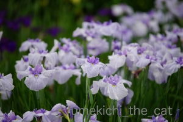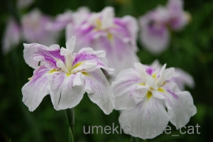
とにかく種類が多いです。
花がモリモリ咲いているので銘板が見えなかったり。
家に帰ってから園内の種別マップと
記憶の場所を照らし合わせても「？？？」だったので
花名は無しですw
ごめんなさいね(⌒-⌒;
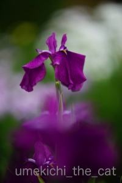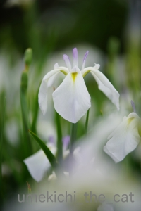
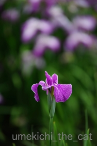
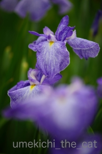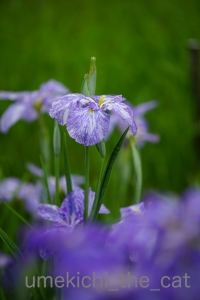
最後の二枚の写真の花菖蒲は同じ品種かな。
水彩絵の具で色付けしたような花びらにじっと見入っちゃいました。
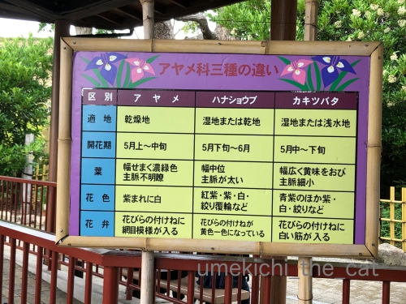
アヤメ科３種の見分け方。
看板見た時は覚えたような気になるんですが
いざお花を目の前にすると「え〜っと(◎_◎)？」ってなっちゃいます。
アヤメは花びらの付け根に網目模様って言われてますが
花菖蒲もそんな模様のを見かけるんですよ (-_-メ)
花菖蒲は乾地って覚えた時期もあったのですがここは湿地だし・・・
ま、それはそれとして純粋に楽しめば良いのですよねー！
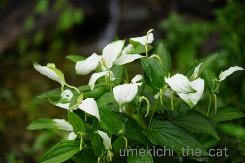
半夏生も咲いてましたよ。

カフェオレ色の梅吉

梅吉 2023年8月10日 永眠


梅吉と出会った譲渡会

犬猫の理由なき殺処分ゼロ
妄想広告
UMEKICHI 光

爆発的に早い！
時々攻撃的！
Thanks to Mr.Boss365
爆発的に早い！
時々攻撃的！
Thanks to Mr.Boss365

何をしてもエライねーって言うの分かります。本当にそう思えるから不思議。
アヤメとショウブは説明を読んでから写真を見返しても分かりまへん。
by zombiekong (2019-06-10 01:50)
梅吉さん元気でいいニャ～
その元気を私にも少し分けてもらいたい（ﾟ□ﾟ）
アヤメ科３種の見分け方が書いてあっても見比べないとワカンナイよねw
by 英ちゃん (2019-06-10 06:25)
カキツバタは他の花より花びらが細い気がします＾＾
by ぽちの輔 (2019-06-10 06:38)
良〜くわかります＾＾
ニャンコが普通に行動してるだけで
つい褒めちゃうんですよねぇ( ^ω^ )
我が家も普段は登らない高い場所に登ってると
「すごい〜、頑張って登れたんだねぇ=(^.^)=えらいねぇ」とか
何かしてる時に鍋で寝てたら「邪魔しないでお利口さんだねぇ」とかw
ニャンコって褒められ上手ですよねぇ♪( ´▽｀)
by ニッキー (2019-06-10 06:57)
ふふふっ(*‘∀‘)
イタズラしなければ褒めっぱなし（笑
イタズラしても、一瞬怒ったら
反省しているよねぇ～！いい子、いい子と
褒めちぎる(;^_^A
当たり前の生活しているだけなのに
褒めることいっぱいですよねぇ～
ちなみに私は、試しに旦那に
『トイレ行ってくるから、帰ってきたら
褒めてくれ』と頼み、
ちゃんと褒めてくれましたが
あまり嬉しくありませんでした（爆
バカな夫婦です(;^_^A
by きぃ (2019-06-10 08:01)
わかります(๑˃̵ᴗ˂̵)
良い子ね、とか、かわいいよ、を連発しすぎて
価値が下がってるんじゃないかと思ったりして。
ワンランク上の言い方を考えねば(≧∀≦)
by も〜 (2019-06-10 08:58)
年に一度の宮崎マンゴー良いですね！
宮崎マンゴーは高いのでなかなか買えません(^^)
by ma2ma2 (2019-06-10 10:24)
こんにちは。
猫を「褒めて伸ばす」システム？女性の方に多いかもです。
小生ボスママも同じで・・・
ウーを場外にしても「よく出来ましたー健康ですねー」と褒めます？
小生が猫に「ちょっかい」を出すと「性格が悪くなる」からと制止・否定されます。
梅吉くんは可愛いので、自然と褒め言葉が出てくる感じですね。
マンゴー良いですね。高級品！！良いルートをお持ちです。美味しそうー。
アヤメ科三種？画像を拡大して文字理解しても判別は難しそうです！？(=^･ｪ･^=)
by Boss365 (2019-06-10 12:12)
ソファーでゴロニャーン
めちゃ可愛いです
宮崎マンゴー 良いな〜 生唾ゴクン！
by チャー (2019-06-10 12:20)
あ～わかります！！
歯みがきでガブガブ噛まれても「よ～く頑張った、えらいぞ～♪」
ただ廊下で伸びていても「待っててくれたん？なんてエエ子やの～♪」
惚れ惚れするような見事なうんＰしたら「でかした！」と写真撮っちゃいます(#^^#)
心からそう思ってるのが不思議ですね！
花菖蒲、見事ですね。
元気にカメラ持ってでかけられるのはバラの季節まで。それ以降はどうにも気力がわかず、城北公園には行ったことがありません・・・。
by ゆきち (2019-06-10 12:57)
駄目だね。よりも偉いね。のほうが言っている本人も気持ち良いですね。
by ニコニコファイト (2019-06-10 14:21)
ほめて伸ばす！すばらしいですねｗｗ
うちはママ上がすぐ『コラーー』と叱るので
怖がってしまって...(･∀･；)
ま、叱られるようなことをするからですが(*￣m￣)ﾌﾟｯ
逆に私は甘やかしすぎのようで＾＾
アヤメ、菖蒲、カキツバタ、説明を見てから
写真を見てもよく分かりません(￣∇￣;) ﾊｯﾊｯﾊｯ
by カトリーヌ (2019-06-10 16:23)
梅吉さん褒められまくりでいい子に育ってますね。
私は帰宅するといつも「今日は何して遊んでたの？」と聞いています(笑
ごはんちゃんと食べた？お水も飲んだ？誰か来た？返事が返ってくることもあります。大阪に菖蒲園があるんですね。神戸にはあるのかどうかよく知らないです。(^^; 見分けがつないですけどみんな同じ仲間だからよしとします。
宮崎県産マンゴーは高級ですよね。年に一度お取り寄せですか？
そういう贅沢な時間はおなかも気持ちも満足しますね。
お姉さんに費やすお金があるならこれくらい気の利いたものを用意してほしいものです。
by marimo (2019-06-10 17:02)
梅吉さん、ソファーで元気に遊んで幸せそうですね。
そろそろ花菖蒲の季節ですね。こっちはもう数週間で咲き始めます。
そうそう、しょうちゃんは今日仕事から帰って車から降りたら、のっそりと現れました。庭に潜んでいたんでしょう。元気で良かったです(^_^)
by kou (2019-06-10 18:53)
マンゴーも、
えらいですね～と褒めるのかと思った（笑）
by angie17 (2019-06-10 19:28)
うちも褒めっぱなしです(;^ω^)本当にそう思ってそのまま口に出るから仕方ないですよね
by palpal (2019-06-10 20:36)
えらいってほめてるのがえらいです！
実家で、ミイちゃんがほめられているの聞いたことないーー。
菖蒲園、立派！神代植物公園の菖蒲園も結構広いと思ったけど負けたわー(笑)
アヤメ、ショウブ、カキツバタ、見分け付きません！
by ChatBleu (2019-06-10 20:47)
梅吉さんに話しかけるんですね。
私も話します。
寝ていると「調子悪いの？」とか。
猫さんなので、ただねているだけなんですが。
寝込んでいるのかと思って心配になるんです。
ただ眠たいので寝ているだけでした＾＾
by riverwalk (2019-06-10 20:53)
そこにいてくれるだけで嬉しいのに、
色々と楽しませてくれるのですから（個人的には）
ちぃさんの心からの、
感謝の言葉が溢れ出ているのと思います（笑）
宮崎のマンゴーは太陽のタマゴですから、
特に美味しく感じますね。
城北公園、確認しました（笑）
明日、晴れたら行ってきますm(_ _)m
by kiki (2019-06-10 21:10)
梅吉さん、
平に平にm(_ _)m m(_ _)m
鼻水なんて、誰か言ったのか！
涙でしょう！
叩いてやりますよ（笑）
前のコメント欄に書きましたが、
エラーで受け付けてくれません m(_ _)m
by kiki (2019-06-10 21:35)
おお！梅吉さん躍動的！！
たしかに、エライねーって言いながら頭を撫でると気持ち良さそうな表情になる気がします。^^)
花菖蒲、満開ですね。素晴らしい！
by yes_hama (2019-06-10 21:57)
姉さん写真上手いっすよねぇ
by (。・_・。)２ｋ (2019-06-10 23:16)
梅さまの「のび〜〜」は、ちぃさんご夫婦の褒めのたまものでしょう^^
（褒めて「のびる」違い？）
うちの場合は、褒めてはいないですが
日頃から「かわいいかわいい」三昧です。いや、これも褒めてるか^^;
アヤメ、ショウブ、カキツバタ・・・
わたしも、毎回説明書きを見ても判断できません^^;
品種も多すぎて（どれも似たようものなのに^^;）覚えられませんよね〜
by Ja-Kou66 (2019-06-11 00:31)
そうなのです！
褒めちゃうのです。自然と褒めちゃうのです！
そうさせるのが猫なのです^^
褒めてあげようなんて気持ちじゃなくても褒めちゃうの♪♪
マンゴー美味しそうっ
わたしも生協で買ったのでｗｗ 今週届く予定なんだけど・・・
さあ、美味しいのかな。どうかなー。
by リュカ (2019-06-11 11:28)
そうかー。そんな風にいつも褒められてるのですね。
そうして素直な良い子に育つわけだー。
私の立派なうんPは、誰も褒めないけど(^_^;)
by よーちゃん (2019-06-12 08:37)
みなさん、ごめんなさい＞＜
今回はお返事お休みです；；
by ちぃ (2019-06-13 17:53)